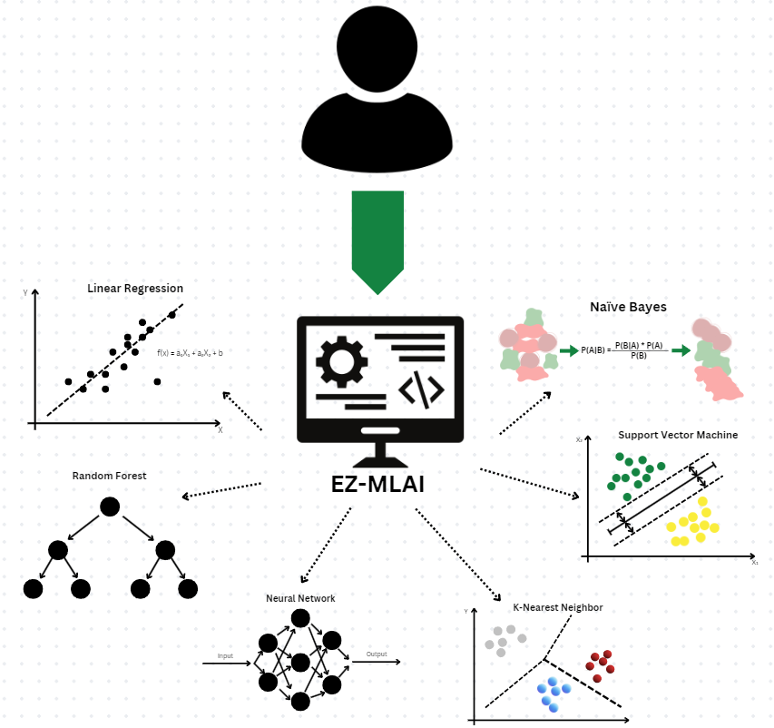

EZ-MLAI
Easy Access to Machine Learning AI
No Matter Your Experience Level
Want to use AI, but don't know how to code? Or are you an experienced coder who doesn't want to be hassled with intricacies?
Then EZ-MLAI is for you. You can customize machine-learning models for an assortment of the most popular models and get model metrics in graphs and digits, all with just a dataset and no coding

EZ-MLAI provides various accommodations and allows for easy machine-learning model building. All you need is a dataset that fits the model parameters listed under each specific model. We provide choices from a list of the 6 most popular Machine Learning algorithms to choose from to build your model. Build Your Novel Machine Learning Model Today.
EZ-MLAI provides various accommodations and allows for easy machine-learning model building. All you need is a dataset that fits the model parameters listed under each specific model. We provide choices from a list of the 6 most popular Machine Learning algorithms to choose from to build your model. Build Your Novel Machine Learning Model Today.
Explore our machine-learning models by navigating to the Models page and learn more about key vocab from the Model Descriptions page.
Data and the corresponding Models that you should use:
Fully numerical features with a continuous numeric target: Linear Regression
Mixed categorical and numerical features with a numeric target: Random Forest
Complex relationships or non-linear patterns in tabular data: Neural Network
A mix of numerical and categorical independent variables and categorical dependent variables: Either K-Nearest-Neighbor or Naive Bayes
Numerical features with a categorical target: Support Vector Machine